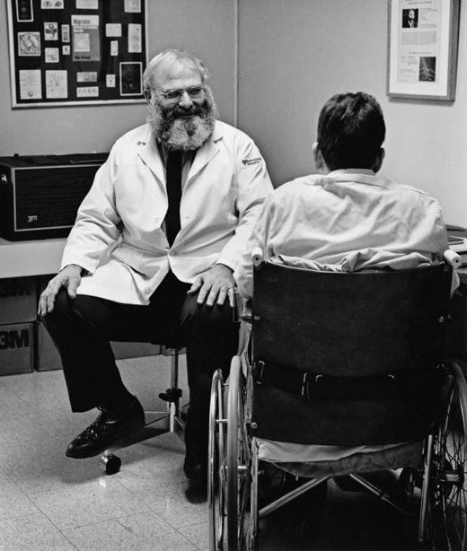

A Tribute to Oliver Sacks
M.D., Neurologist, Author

There will be no one like us when we are gone, but then there is no one like anyone else, ever. When people die, they cannot be replaced. They leave holes that cannot be filled, for it is the fate - the genetic and neural fate - of every human being to be a unique individual, to find his own path, to live his own life, to die his own death.
Oliver Sacks was born in 1933 in London, England. He earned his medical degree at Oxford University, and did residencies and fellowship work at Mt. Zion Hospital in San Francisco and at UCLA.
He has inspired me to be more empathetic towards those suffering with depression, anxiety, and a range of other mental disorders. He has taught me that the prerequisite to living a full life is to give oneself up to it. He has taught me to fight for those whose voices are oppressed, to write with elegance and a touch of madness, and to embrace who I am in benefit to the world.
